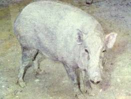
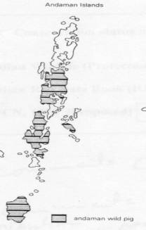

<head>
<meta http-equiv="Content-Type" content="text/html; charset=windows-1252">
<meta name="GENERATOR" content="Microsoft FrontPage 4.0">
<meta name="ProgId" content="FrontPage.Editor.Document">
<title>New Page 1</title>
<meta http-equiv="Content-Type" content="text/html; charset=windows-1252">
<meta name="GENERATOR" content="Microsoft FrontPage 4.0">
<meta name="ProgId" content="FrontPage.Editor.Document">
<title>ECONOMICALLY IMPORTANT PLANTS OF INDIA compiled by K</title>
<meta http-equiv="Content-Type" content="text/html; charset=windows-1252">
<meta name="GENERATOR" content="Microsoft FrontPage 4.0">
<meta name="ProgId" content="FrontPage.Editor.Document">
<title>ECONOMICALLY IMPORTANT PLANTS OF INDIA</title>
<meta http-equiv="Content-Type" content="text/html; charset=windows-1252">
<meta name="GENERATOR" content="Microsoft FrontPage 4.0">
<meta name="ProgId" content="FrontPage.Editor.Document">
<title>New Page 1</title>
<META HTTP-EQUIV="CONTENT-TYPE" CONTENT="text/html; charset=windows-1252">
<TITLE>Aegle marmelos </TITLE>
<META NAME="GENERATOR" CONTENT="Microsoft FrontPage 4.0">
<META NAME="CREATED" CONTENT="20010726;17265013">
<META NAME="CHANGEDBY" CONTENT="L.Sowmya">
<META NAME="CHANGED" CONTENT="20020726;13003551">
<META NAME="DESCRIPTION" CONTENT="Economically Important Plants">
<META NAME="KEYWORDS" CONTENT="Abies pindrow">
<META NAME="ProgId" CONTENT="FrontPage.Editor.Document">
<STYLE>
	<!--
		P { color: #2c9a97 }
	-->
	</STYLE>
<meta name="Microsoft Theme" content="none">
<link>
</head>

<body LANG="en-US" bgcolor="#CCCCCC" text="#009999">
<P><A NAME="begin"></A>
</P>
<table border="1" width="100%">
  <tr>
    <td width="100%" bgcolor="#1658BC">
      <P ALIGN=CENTER><b><font face="Verdana" size="6" color="#FFFFFF">Digitized
      Inventory of Animal Resources: Mammalia&nbsp;</font></b> <font color="#FFFFFF"><br>
      <b>
      Principal Investigator: Dr. R. J. B Alfred, Co-Investigator: Dr. Rama Krishna, Contributed by:
      Dr. M.S.Pradhan</b></font><br>
      </P>
    </td>
  </tr>
</table>
<p ALIGN="CENTER">&nbsp;</p>
<p ALIGN="CENTER"><a href="http://stp.unipune.ernet.in/zsi/photomap.html?code=101"><i style="mso-bidi-font-style:normal"><font color="#808000"><font face="Arial" size="6"><b style="mso-bidi-font-weight: normal; mso-ansi-font-size: 9.0pt; mso-bidi-font-size: 12.0pt; mso-fareast-font-family: Times New Roman; mso-bidi-font-family: Times New Roman; mso-ansi-language: EN-US; mso-fareast-language: EN-US; mso-bidi-language: AR-SA"><span style="mso-ansi-font-size: 9.0pt; mso-bidi-font-size: 12.0pt; mso-fareast-font-family: Times New Roman; mso-bidi-font-family: Times New Roman; mso-ansi-language: EN-US; mso-fareast-language: EN-US; mso-bidi-language: AR-SA; mso-bidi-font-weight: normal">Sus
scrofa andamanensis</span></b></font></font></i><font face="Arial" size="6" color="#808000"><b style="mso-bidi-font-weight: normal; mso-ansi-font-size: 9.0pt; mso-bidi-font-size: 12.0pt; mso-fareast-font-family: Times New Roman; mso-bidi-font-family: Times New Roman; mso-ansi-language: EN-US; mso-fareast-language: EN-US; mso-bidi-language: AR-SA"><span style="mso-bidi-font-size: 12.0pt; mso-fareast-font-family: Times New Roman; mso-bidi-font-family: Times New Roman; mso-ansi-language: EN-US; mso-fareast-language: EN-US; mso-bidi-language: AR-SA; mso-ansi-font-size: 9.0pt; mso-bidi-font-weight: normal">,
Blyth</span></b></font></a></p>
<P ALIGN=LEFT><font size="6" face="Comic Sans MS" color="#009999"><b>&nbsp;&nbsp;&nbsp;&nbsp;&nbsp;&nbsp;&nbsp;&nbsp;&nbsp;&nbsp;&nbsp;&nbsp;&nbsp;&nbsp;&nbsp;&nbsp;</b></font></P>
<P ALIGN=LEFT><A HREF="#Taxonomic Details"><FONT FACE="Comic Sans MS">Taxonomic 
  Details</FONT> </A><FONT FACE="Comic Sans MS"><BR>
  ----- </FONT><A HREF="#Scientific Name"><FONT FACE="Comic Sans MS">Scientific Name</FONT></A><FONT FACE="Comic Sans MS"><BR>
  ----- </FONT><A HREF="#Classification"><FONT FACE="Comic Sans MS">Classification</FONT></A><FONT FACE="Comic Sans MS"><BR>
  ----- </FONT><A HREF="#Synonyms"><FONT FACE="Comic Sans MS">Synonyms</FONT></A><FONT FACE="Comic Sans MS"><BR>
  ----- </FONT><A HREF="#Common Names"><FONT FACE="Comic Sans MS">Common Names</FONT></A><FONT FACE="Comic Sans MS"><BR>
  </FONT><A HREF="#Other Biological Details"><FONT FACE="Comic Sans MS">Other 
  Biological Details</FONT></A><FONT FACE="Comic Sans MS"><BR>
  ----- </FONT><A HREF="#Habit and Habitat"><FONT FACE="Comic Sans MS">Habit and 
  Habitat</FONT></A><FONT FACE="Comic Sans MS"><BR>
  ----- </FONT><A HREF="#Distribution"><FONT FACE="Comic Sans MS">Distribution</FONT></A><FONT FACE="Comic Sans MS"><BR>
  ---------- </FONT><A HREF="#Extend of Occurance"><FONT FACE="Comic Sans MS">Extend of
Occurrence</FONT></A><FONT FACE="Comic Sans MS"><BR>
  ---------- </FONT><A HREF="#Area of occurance"><FONT FACE="Comic Sans MS">Area of
</FONT></A><A HREF="#Area of occurance"><font face="Comic Sans MS">occurrence</font></A><FONT FACE="Comic Sans MS"><BR>
  ---------- </FONT><A HREF="#Altitude:"><FONT FACE="Comic Sans MS">Altitude</FONT></A><FONT FACE="Comic Sans MS"><BR>
  ---------- </FONT><A HREF="#Population:"><FONT FACE="Comic Sans MS">Population</FONT></A><FONT FACE="Comic Sans MS"><BR>
  ----- </FONT>
  <A HREF="#Conservation Status:"><FONT FACE="Comic Sans MS">Conservation Status</FONT></A><FONT FACE="Comic Sans MS"><BR>
  ----- </FONT>
  <A HREF="#Diagnostic Features"><FONT FACE="Comic Sans MS">Diagnostic 
  Features</FONT></A><FONT FACE="Comic Sans MS"><BR>
  ----- </FONT>
<a HREF="#Breeding system"><FONT FACE="Comic Sans MS">Breeding system</FONT></a><FONT FACE="Comic Sans MS"><BR>
  </FONT><A HREF="#Miscellaneous Information"><FONT FACE="Comic Sans MS">Miscellaneous 
  Information</FONT></A><FONT FACE="Comic Sans MS"><BR>
  </FONT><A HREF="#Literature"><FONT FACE="Comic Sans MS">Literature</FONT></A></P>
<HR SIZE=3 COLOR="#0000ff">
<P><A NAME="Taxonomic Details"></A><FONT SIZE=6><FONT FACE="Monotype Corsiva"><FONT COLOR="#1658bc"><u>Taxonomic 
  Details</u></FONT></FONT></FONT> </P>
<HR SIZE=3 COLOR="#0000ff">
<P><A NAME="Scientific Name"></A><A NAME="Classification"></A><A NAME="Synonyms"></A><A NAME="Common Names"></A> 
  <FONT FACE="Comic Sans MS, sans-serif"><U>Scientific Name</U> :&nbsp;</FONT><font face="Comic Sans MS, sans-serif">&nbsp;</font><a href="http://stp.unipune.ernet.in/zsi/photomap.html?code=101"><i style="mso-bidi-font-style:normal"><font color="#808000"><font face="Arial" size="6"><b style="mso-bidi-font-weight: normal; mso-ansi-font-size: 9.0pt; mso-bidi-font-size: 12.0pt; mso-fareast-font-family: Times New Roman; mso-bidi-font-family: Times New Roman; mso-ansi-language: EN-US; mso-fareast-language: EN-US; mso-bidi-language: AR-SA"><span style="mso-ansi-font-size: 9.0pt; mso-bidi-font-size: 12.0pt; mso-fareast-font-family: Times New Roman; mso-bidi-font-family: Times New Roman; mso-ansi-language: EN-US; mso-fareast-language: EN-US; mso-bidi-language: AR-SA; mso-bidi-font-weight: normal">Sus
scrofa andamanensis</span></b></font></font></i><font face="Arial" size="6" color="#808000"><b style="mso-bidi-font-weight: normal; mso-ansi-font-size: 9.0pt; mso-bidi-font-size: 12.0pt; mso-fareast-font-family: Times New Roman; mso-bidi-font-family: Times New Roman; mso-ansi-language: EN-US; mso-fareast-language: EN-US; mso-bidi-language: AR-SA"><span style="mso-bidi-font-size: 12.0pt; mso-fareast-font-family: Times New Roman; mso-bidi-font-family: Times New Roman; mso-ansi-language: EN-US; mso-fareast-language: EN-US; mso-bidi-language: AR-SA; mso-ansi-font-size: 9.0pt; mso-bidi-font-weight: normal">,
Blyth</span></b></font></a></P>
<P><font face="Comic Sans MS" size="3"><U>Classification</U><b><U>:</U></b></font></P>
<blockquote>
  <blockquote>
    <blockquote>
      <blockquote>
        <blockquote>
          <blockquote>
            <blockquote>
<P><font face="Arial" size="4"><span style="mso-bidi-font-size: 12.0pt; color: black">Order:<i style="mso-bidi-font-style:normal">Artiodactyla</i><o:p>
</o:p>
</span></font></P>
              <span style="mso-bidi-font-size: 12.0pt; mso-fareast-font-family: Times New Roman; mso-bidi-font-family: Times New Roman; color: black; mso-ansi-language: EN-US; mso-fareast-language: EN-US; mso-bidi-language: AR-SA"><font face="Arial" size="4">Family:</font><i style="mso-bidi-font-style:normal"><font face="Arial" size="4">Suidae</font></i></span>
            </blockquote>
          </blockquote>
        </blockquote>
      </blockquote>
    </blockquote>
  </blockquote>
</blockquote>
<P><font face="Comic Sans MS, sans-serif" size="3">
  <U>Synonyms</U>:&nbsp;&nbsp;&nbsp;&nbsp;&nbsp;&nbsp;&nbsp;&nbsp;&nbsp;&nbsp;&nbsp;&nbsp;&nbsp;&nbsp;&nbsp;&nbsp;&nbsp;&nbsp;&nbsp;&nbsp;&nbsp;&nbsp;&nbsp;&nbsp;&nbsp;&nbsp;&nbsp;
<i style="mso-bidi-font-style:normal"><span style="font-size:9.0pt;mso-bidi-font-size:12.0pt;font-family:Verdana;
mso-fareast-font-family:&quot;Times New Roman&quot;;mso-bidi-font-family:&quot;Times New Roman&quot;;
color:black;mso-ansi-language:EN-US;mso-fareast-language:EN-US;mso-bidi-language:
AR-SA">Sus andamenensis, Blyth</span></i> </font></P>
<P><font face="Comic Sans MS, sans-serif" size="3"><BR>
  <U>Common Names</U><SPAN STYLE="text-decoration: none">:&nbsp;</SPAN></font><FONT FACE="Comic Sans MS, sans-serif"><SPAN STYLE="text-decoration: none">&nbsp;&nbsp;&nbsp;&nbsp;&nbsp;&nbsp;&nbsp;&nbsp;&nbsp;&nbsp;&nbsp;&nbsp;&nbsp;
</SPAN></FONT><span style="font-size:9.0pt;
mso-bidi-font-size:12.0pt;font-family:Verdana;color:black">Andaman Wild Pig</span><span style="font-size: 10.0pt; mso-bidi-font-size: 12.0pt; color: black"><i style="font-size: 10.0pt; mso-bidi-font-size: 12.0pt; color: black">&nbsp;&nbsp;&nbsp;&nbsp;&nbsp;
</i></span><span style="font-size:9.0pt;mso-bidi-font-size:
12.0pt;font-family:Verdana;mso-fareast-font-family:&quot;Times New Roman&quot;;
mso-bidi-font-family:&quot;Times New Roman&quot;;color:black;mso-ansi-language:EN-US;
mso-fareast-language:EN-US;mso-bidi-language:AR-SA"><i style="mso-bidi-font-style:normal">Regional
Names:</i></span><span style="font-size:9.0pt;mso-bidi-font-size:12.0pt;font-family:Verdana;
mso-fareast-font-family:&quot;Times New Roman&quot;;mso-bidi-font-family:&quot;Times New Roman&quot;;
color:black;mso-ansi-language:EN-US;mso-fareast-language:EN-US;mso-bidi-language:
AR-SA">&nbsp;Not Available</span><font face="Comic Sans MS"><BR>
  </font><BR>
</P>
<P ALIGN=RIGHT><A HREF="#begin"><U><FONT FACE="Comic Sans MS">Back to
Top</FONT></U></A></P>
<HR SIZE=3 COLOR="#0000ff">
<P><A NAME="Other Biological Details"></A><FONT SIZE=3><FONT SIZE=6><FONT FACE="Monotype Corsiva"><FONT COLOR="#1658bc"><u>Other 
  Biological Details</u></FONT></FONT></FONT></FONT> 
</P>
<p class="MsoNormal" style="text-align:justify"><i style="mso-bidi-font-style:
normal"><span style="font-size:9.0pt;mso-bidi-font-size:12.0pt;font-family:
Verdana;color:black">Threats:&nbsp;</span></i><span style="font-size:9.0pt;
mso-bidi-font-size:12.0pt;font-family:Verdana;color:black"> Habitat
Fragmentation, Agriculture and Farming, Human Interference, Loss of Habitat,
Hunting, Hybridization with introduced domestic forms etc.;&nbsp;<i style="mso-bidi-font-style:normal">Effect
of threats on population (Perceived or inferred)</i>:&nbsp;Declining</span><span style="font-size:10.0pt;mso-bidi-font-size:12.0pt;
color:black">&nbsp;<o:p>
</o:p>
</span></p>
<p class="MsoNormal" style="text-align:justify"><i style="mso-bidi-font-style:
normal"><span style="font-size:9.0pt;mso-bidi-font-size:12.0pt;font-family:
Verdana;color:black">Trade:&nbsp;</span></i><span style="font-size:9.0pt;
mso-bidi-font-size:12.0pt;font-family:Verdana;color:black"> Local;&nbsp;<i style="mso-bidi-font-style:normal">Parts
in trade</i>:&nbsp;Meat insurg;&nbsp;<i style="mso-bidi-font-style:normal">Effect
of trade on population (Perceived or inferred)</i>:&nbsp;Declining</span><span style="font-size:9.0pt;mso-bidi-font-size:
12.0pt;font-family:Verdana;mso-fareast-font-family:&quot;Arial Unicode MS&quot;;
color:black"><o:p>
</o:p>
</span></p>
<P>&nbsp; 
</P>
<HR SIZE=3 COLOR="#0000ff">
<P STYLE="margin-bottom: 0cm"><A NAME="Habit and Habitat"></A><U><FONT FACE="Comic Sans MS">HABIT 
  &amp; HABITAT</FONT></U></P>
<p class="MsoNormal" style="text-align:justify"><span style="font-size:9.0pt;
mso-bidi-font-size:12.0pt;font-family:Verdana;color:black">Forest dwelling
animal. However, occasionally visits cultivated fields also. Feeds mainly on
roots, tubers seeds, insects, offal and carrions.</span><span style="font-size:10.0pt;mso-bidi-font-size:12.0pt;
color:black">&nbsp;<o:p>
</o:p>
</span></p>
<p class="MsoNormal" style="text-align:justify"><i style="mso-bidi-font-style:
normal"><span style="font-size:9.0pt;mso-bidi-font-size:12.0pt;font-family:
Verdana;color:black">Habitat Structure:</span></i><span style="font-size:9.0pt;
mso-bidi-font-size:12.0pt;font-family:Verdana;color:black">&nbsp;Insular forests
and cultivated lands near forest fringes.Change in Habitat structure, general
decline in 50 years.</span><font face="Comic Sans MS" size="3">&nbsp;&nbsp;&nbsp;<b>&nbsp;&nbsp;&nbsp;&nbsp;&nbsp;&nbsp;&nbsp;&nbsp;&nbsp;&nbsp;&nbsp;&nbsp;&nbsp;</b></p>
</font>
<p>&nbsp;</p>
<p align=RIGHT style="margin-bottom: 0cm"><font face="Comic Sans MS" size="3"><a href="#begin">Back 
  to Top</a></font></p>
<P STYLE="margin-bottom: 0cm">&nbsp;</P>
<P><font size="3"><A NAME="Distribution"></A><A NAME="Extend of Occurance"></A><A NAME="Area of occurance:"></A><A NAME="Altitude:"></A><A NAME="Population:"></a><A NAME="Conservation status:"></A> 
  <FONT FACE="Comic Sans MS"><U>Distribution</U>:</FONT></font></P>
<P>&nbsp;&nbsp;&nbsp;<font face="Comic Sans MS" size="3">&nbsp;&nbsp;&nbsp;&nbsp;&nbsp;&nbsp;&nbsp;&nbsp;&nbsp;&nbsp;&nbsp;&nbsp;&nbsp;&nbsp;&nbsp;&nbsp;
<span style="font-size:9.0pt;
mso-bidi-font-size:12.0pt;font-family:Verdana;color:black">Middle, South and
little Andaman Islands and Havelock Island within Indian limits</span></font></P>
<P><span style="font-size:9.0pt;mso-bidi-font-size:12.0pt;font-family:
Verdana;color:black"><i style="mso-bidi-font-style:
normal">&nbsp;&nbsp;&nbsp;</i><i style="mso-bidi-font-style: normal; font-size: 9.0pt; mso-bidi-font-size: 12.0pt; font-family: Verdana; color: black">&nbsp;&nbsp;&nbsp;&nbsp;&nbsp;&nbsp;&nbsp;&nbsp;&nbsp;&nbsp;&nbsp;&nbsp;&nbsp;&nbsp;&nbsp;&nbsp;&nbsp;&nbsp;&nbsp;&nbsp;
</i><i style="mso-bidi-font-style:
normal">No.</i><i style="mso-bidi-font-style: normal; font-size: 9.0pt; mso-bidi-font-size: 12.0pt; font-family: Verdana; color: black">
</i><i style="mso-bidi-font-style:
normal">of Locations:&nbsp;</i></span><span style="font-size:
9.0pt;mso-bidi-font-size:12.0pt;font-family:Verdana;color:black">Four;&nbsp;<i style="mso-bidi-font-style:normal">Type:&nbsp;</i>Isolated</span><span style="font-size:9.0pt;mso-bidi-font-size:12.0pt;font-family:Verdana;
mso-fareast-font-family:&quot;Arial Unicode MS&quot;;color:black"><o:p>
</o:p>
</span></P>
<P><font face="Comic Sans MS" size="3"><U>Extent of </U><u>Occurrence&nbsp;&nbsp;&nbsp;</u>&nbsp;&nbsp;&nbsp;&nbsp;&nbsp;&nbsp;&nbsp;&nbsp;&nbsp;&nbsp;&nbsp;&nbsp;
<span style="font-size:9.0pt;
mso-bidi-font-size:12.0pt;font-family:Verdana;color:black">2001-5000 sq.kms.</span><span style="font-size:9.0pt;mso-bidi-font-size:12.0pt;font-family:Verdana;
mso-fareast-font-family:&quot;Arial Unicode MS&quot;;color:black"><o:p>
</o:p>
</span>
  </font></P>
<P STYLE="margin-bottom: 0cm"><font face="Comic Sans MS" size="3"><U>Area of occurrence:&nbsp;&nbsp;&nbsp;</U>&nbsp;&nbsp;&nbsp;&nbsp;&nbsp;&nbsp;&nbsp;&nbsp;&nbsp;&nbsp;&nbsp;&nbsp;&nbsp;&nbsp;&nbsp;&nbsp;
<span style="font-size:9.0pt;mso-bidi-font-size:12.0pt;
font-family:Verdana;mso-fareast-font-family:&quot;Times New Roman&quot;;mso-bidi-font-family:
&quot;Times New Roman&quot;;color:black;mso-ansi-language:EN-US;mso-fareast-language:
EN-US;mso-bidi-language:AR-SA">501-2000 sq.kms.</span> 
  </font></P>
<P STYLE="margin-bottom: 0cm"><font face="Comic Sans MS" size="3"><U>Altitude:</U></font><font color="#000000" face="Comic Sans MS" size="4">&nbsp;&nbsp;</font><font face="Comic Sans MS" size="3"><BR>
  <BR>
  <U>Population:</U>&nbsp; </font></P>
<p class="MsoNormal" style="text-align:justify"><i style="mso-bidi-font-style:
normal"><span style="font-size:9.0pt;mso-bidi-font-size:12.0pt;font-family:
Verdana;color:black">Global Population:&nbsp;</span></i><span style="font-size:
9.0pt;mso-bidi-font-size:12.0pt;font-family:Verdana;color:black">Not Known;&nbsp;<i style="mso-bidi-font-style:normal">No.of
mature individuals in all the populations:&nbsp;</i>Not known</span><span style="font-size:10.0pt;mso-bidi-font-size:12.0pt;
color:black">&nbsp;<o:p>
</o:p>
</span></p>
<p class="MsoNormal" style="text-align:justify"><i style="mso-bidi-font-style:
normal"><span style="font-size:9.0pt;mso-bidi-font-size:12.0pt;font-family:
Verdana;color:black">Captive Population:&nbsp;</span></i><span style="font-size:9.0pt;mso-bidi-font-size:12.0pt;font-family:Verdana;
color:black">Not Known</span><span style="font-size:10.0pt;mso-bidi-font-size:12.0pt;
color:black">&nbsp;<o:p>
</o:p>
</span></p>
<i style="mso-bidi-font-style:normal"><span style="font-size:9.0pt;mso-bidi-font-size:
12.0pt;font-family:Verdana;mso-fareast-font-family:&quot;Times New Roman&quot;;
mso-bidi-font-family:&quot;Times New Roman&quot;;color:black;mso-ansi-language:EN-US;
mso-fareast-language:EN-US;mso-bidi-language:AR-SA">Life span:&nbsp;</span></i><span style="font-size:9.0pt;mso-bidi-font-size:12.0pt;font-family:Verdana;
mso-fareast-font-family:&quot;Times New Roman&quot;;mso-bidi-font-family:&quot;Times New Roman&quot;;
color:black;mso-ansi-language:EN-US;mso-fareast-language:EN-US;mso-bidi-language:
AR-SA"> (Wild):&nbsp;Not Known;&nbsp;(Captivity):&nbsp;Not Known.</span>
<p><i style="mso-bidi-font-style:normal"><span style="font-size:9.0pt;mso-bidi-font-size:12.0pt;font-family:Verdana;
mso-fareast-font-family:&quot;Times New Roman&quot;;mso-bidi-font-family:&quot;Times New Roman&quot;;
color:black;mso-ansi-language:EN-US;mso-fareast-language:EN-US;mso-bidi-language:
AR-SA">Population Trend:&nbsp;</span></i><span style="font-size:9.0pt;
mso-bidi-font-size:12.0pt;font-family:Verdana;mso-fareast-font-family:&quot;Times New Roman&quot;;
mso-bidi-font-family:&quot;Times New Roman&quot;;color:black;mso-ansi-language:EN-US;
mso-fareast-language:EN-US;mso-bidi-language:AR-SA">Declined about &gt;20 % in
last 50 years.</span></p>
<P STYLE="margin-bottom: 0cm"><font face="Comic Sans MS" size="3"><U>Conservation status:&nbsp;&nbsp;&nbsp;</U>&nbsp;&nbsp;&nbsp;&nbsp;&nbsp;&nbsp;&nbsp;&nbsp;&nbsp;&nbsp;&nbsp;&nbsp;&nbsp;&nbsp;&nbsp;&nbsp;&nbsp;
<span style="font-size:9.0pt;mso-bidi-font-size:12.0pt;
font-family:Verdana;mso-fareast-font-family:&quot;Times New Roman&quot;;mso-bidi-font-family:
&quot;Times New Roman&quot;;color:black;mso-ansi-language:EN-US;mso-fareast-language:
EN-US;mso-bidi-language:AR-SA">Endemic to Andaman</span>&nbsp;&nbsp;&nbsp;&nbsp;&nbsp;&nbsp;
<b style="mso-bidi-font-weight:normal"><span style="font-size:9.0pt;mso-bidi-font-size:12.0pt;font-family:Verdana;
color:black">Insufficiently Known</span></b><span style="color:black"><o:p>
</o:p>
</span><BR>

<i style="mso-bidi-font-style:
normal"><span style="font-size:9.0pt;mso-bidi-font-size:12.0pt;font-family:
Verdana;color:black">CITES APPENDIX:</span></i><span style="font-size:9.0pt;
mso-bidi-font-size:12.0pt;font-family:Verdana;color:black">&nbsp;None;&nbsp;<i style="mso-bidi-font-style:normal">Indian
Wildlife (Protection) Act (1972) (As ammended upto 2002):</i>&nbsp;Schedule I;&nbsp;Part
;&nbsp;<i style="mso-bidi-font-style:
normal">Indian Red Data Book (IUCN, 1994):</i>&nbsp;Insufficiently Known;&nbsp;<i style="mso-bidi-font-style:normal">IUCN
(1998)</i> (Proposed):&nbsp;Not Listed;&nbsp;<i style="mso-bidi-font-style:normal">IUCN
(2002)</i> (Proposed):&nbsp;Not Listed;&nbsp;</span><span style="font-size:9.0pt;
mso-bidi-font-size:12.0pt;font-family:Verdana;mso-fareast-font-family:&quot;Arial Unicode MS&quot;;
color:black"><o:p>
</o:p>
</span><span style="mso-tab-count:1">&nbsp;&nbsp;&nbsp;&nbsp;&nbsp;&nbsp;&nbsp;&nbsp;&nbsp; </span>
  <P STYLE="margin-bottom: 0cm"><font face="Comic Sans MS" size="3"><A NAME="Diagnostic Features"></A><A NAME="Breeding system"></A><U>DIAGNOSTIC 
  FEATURES</U>:</font></font><font face="Comic Sans MS" size="4" color="#000000">&nbsp;</font></P>

<p class="MsoNormal" style="text-align:justify"><span style="font-size:9.0pt;
mso-bidi-font-size:12.0pt;font-family:Verdana;color:black">Andaman Wild Pig is
an insular form and is much smaller than the mainland wild pig, Sus scrofa. It
measures 51 -52 cm in height at shoulder. Tail with brown tuft is very short and
as long as the hind feet . Andaman pig is characterized by an indistinct mid
dorsal crest. Its snout is elongated terminating in a truncated, mobile, flat,
disc bearing nostrils. Ears large. Body colour is generally black with brownish gray
tips. Young ones are striped.</span><span style="font-size:10.0pt;mso-bidi-font-size:12.0pt;
color:black">&nbsp;<o:p>
</o:p>
</span></p>
<p class="MsoNormal" style="text-align:justify"><i style="mso-bidi-font-style:
normal"><span style="font-size:9.0pt;mso-bidi-font-size:12.0pt;font-family:
Verdana;color:black">Measurements:</span></i><span style="font-size:9.0pt;
mso-bidi-font-size:12.0pt;font-family:Verdana;color:black">&nbsp;(In cm): Head
and Body Length: 110-150; Tail length: 4; Height at shoulders: 51-52.</span><span style="font-size:10.0pt;mso-bidi-font-size:12.0pt;
color:black">&nbsp;<o:p>
</o:p>
</span></p>
<p class="MsoNormal" style="text-align:justify"><i style="mso-bidi-font-style:
normal"><span style="font-size:9.0pt;mso-bidi-font-size:12.0pt;font-family:
Verdana;color:black">Weight:</span></i><span style="font-size:9.0pt;mso-bidi-font-size:
12.0pt;font-family:Verdana;color:black">&nbsp;Not Known</span><span style="font-size:9.0pt;mso-bidi-font-size:12.0pt;font-family:Verdana;
mso-fareast-font-family:&quot;Arial Unicode MS&quot;;color:black"><o:p>
</o:p>
</span></p>
<font face="Comic Sans MS" size="3">

  <U>Breeding system:</U></font>
<p>&nbsp;</p>
<P ALIGN=RIGHT><A HREF="#begin"><FONT FACE="Comic Sans MS">Back to
Top</FONT></A><FONT FACE="Comic Sans MS"> </FONT>
</P>
<HR SIZE=3 COLOR="#0000ff">
<P><A NAME="Miscellaneous Information2"></A><A NAME="Miscellaneous Information1"></A>
 <FONT SIZE=6><FONT FACE="Monotype Corsiva"><FONT COLOR="#1658bc">
<U>Miscellaneous
Information</U>&nbsp;&nbsp;</FONT></FONT></FONT>
</P>
<P><i style="mso-bidi-font-style:normal"><span style="font-size:9.0pt;mso-bidi-font-size:12.0pt;font-family:Verdana;
mso-fareast-font-family:&quot;Times New Roman&quot;;mso-bidi-font-family:&quot;Times New Roman&quot;;
color:black;mso-ansi-language:EN-US;mso-fareast-language:EN-US;mso-bidi-language:
AR-SA">Intraspecific variations:</span></i><span style="font-size:9.0pt;
mso-bidi-font-size:12.0pt;font-family:Verdana;mso-fareast-font-family:&quot;Times New Roman&quot;;
mso-bidi-font-family:&quot;Times New Roman&quot;;color:black;mso-ansi-language:EN-US;
mso-fareast-language:EN-US;mso-bidi-language:AR-SA">&nbsp;Corbet and Hill (1992)
cosider this subspecies as a distinct feral population in absence of wild
population of Sus scrofa on the islands. He has tentatively retained it under
Sus domesticus, Brisson. However, Wilson and Reeder (1993) have retained it as a
subspecies under Sos scrofa only. There are 22 subspecies of Sus scrofa. Andaman
Wild pig, Sus scrofa andamanensis, Blyth, is endemic to Andaman islands only.</span>
</P>
<P><i style="mso-bidi-font-style:normal"><span style="font-size:9.0pt;mso-bidi-font-size:12.0pt;font-family:Verdana;
mso-fareast-font-family:&quot;Times New Roman&quot;;mso-bidi-font-family:&quot;Times New Roman&quot;;
color:black;mso-ansi-language:EN-US;mso-fareast-language:EN-US;mso-bidi-language:
AR-SA">Sighting Records:&nbsp;</span></i><span style="font-size:9.0pt;
mso-bidi-font-size:12.0pt;font-family:Verdana;mso-fareast-font-family:&quot;Times New Roman&quot;;
mso-bidi-font-family:&quot;Times New Roman&quot;;color:black;mso-ansi-language:EN-US;
mso-fareast-language:EN-US;mso-bidi-language:AR-SA"> <i style="mso-bidi-font-style:
normal">Type of Sighting:</i>&nbsp;None.;&nbsp;<i style="mso-bidi-font-style:
normal">Field Notes:</i>&nbsp;Groves (1981a) and Corbet and Clutton-Brock (1984)
(as cited in Corbet and Hill, 1992) have conducted studies on taxonomy of Sus
species</span>
</P>
<p class="MsoNormal" style="text-align:justify"><i style="mso-bidi-font-style:
normal"><span style="font-size:9.0pt;mso-bidi-font-size:12.0pt;font-family:
Verdana;color:black">Taxon related studies recommended:&nbsp;</span></i><span style="font-size:9.0pt;mso-bidi-font-size:12.0pt;font-family:Verdana;
color:black">In-situ Survey, Genetic studies, Limiting Factor Research,
Conservation strategy studies etc.</span><span style="font-size:9.0pt;
mso-bidi-font-size:12.0pt;font-family:Verdana;mso-fareast-font-family:&quot;Arial Unicode MS&quot;;
color:black"><o:p>
</o:p>
</span></p>
<p class="MsoNormal"><span style="font-size:10.0pt;mso-bidi-font-size:12.0pt;
color:black">&nbsp;</span><i style="mso-bidi-font-style:normal"><span style="font-size:9.0pt;mso-bidi-font-size:
12.0pt;font-family:Verdana;mso-fareast-font-family:&quot;Times New Roman&quot;;
mso-bidi-font-family:&quot;Times New Roman&quot;;color:black;mso-ansi-language:EN-US;
mso-fareast-language:EN-US;mso-bidi-language:AR-SA">Remarks:&nbsp;</span></i><span style="font-size:9.0pt;mso-bidi-font-size:12.0pt;font-family:Verdana;
mso-fareast-font-family:&quot;Times New Roman&quot;;mso-bidi-font-family:&quot;Times New Roman&quot;;
color:black;mso-ansi-language:EN-US;mso-fareast-language:EN-US;mso-bidi-language:
AR-SA">Considering threats of restricted distribution, forced inbreeding with
introduced domestic forms, hunting and habitat loss, it is recommanded that the
subspecies should be allotted endangered status under IUCN category.</span></p>
<P>&nbsp;
</P>
<font face="Comic Sans MS" size="3">
<p class="MsoNormal" style="margin-left:1.0in;text-align:justify;text-indent:
-1.0in"><span style="mso-spacerun: yes">&nbsp;&nbsp;</span><span style="mso-tab-count:1">&nbsp;&nbsp;&nbsp;&nbsp;&nbsp;&nbsp;&nbsp;</span>&nbsp;&nbsp;&nbsp;<span style="mso-tab-count: 1">&nbsp;
</span></p>
</font>
<HR SIZE=3 COLOR="#0000ff">
<P><font face="Comic Sans MS">&nbsp;&nbsp;&nbsp;&nbsp;&nbsp;&nbsp;&nbsp;&nbsp;&nbsp;&nbsp;&nbsp;&nbsp;&nbsp;&nbsp;&nbsp;&nbsp;&nbsp;&nbsp;&nbsp;&nbsp;&nbsp;&nbsp;&nbsp;&nbsp;&nbsp;&nbsp;&nbsp;&nbsp;&nbsp;&nbsp;&nbsp;&nbsp;&nbsp;&nbsp;&nbsp;&nbsp;&nbsp;&nbsp;&nbsp;&nbsp;&nbsp;&nbsp;&nbsp;&nbsp;&nbsp;&nbsp;&nbsp;&nbsp;
<span style="font-size:9.0pt;mso-bidi-font-size:12.0pt;
font-family:Verdana;mso-fareast-font-family:&quot;Times New Roman&quot;;mso-bidi-font-family:
&quot;Times New Roman&quot;;color:black;mso-ansi-language:EN-US;mso-fareast-language:
EN-US;mso-bidi-language:AR-SA"><!--[if gte vml 1]><v:shapetype id="_x0000_t75"
 coordsize="21600,21600" o:spt="75" o:preferrelative="t" path="m@4@5l@4@11@9@11@9@5xe"
 filled="f" stroked="f">
 <v:stroke joinstyle="miter"/>
 <v:formulas>
  <v:f eqn="if lineDrawn pixelLineWidth 0"/>
  <v:f eqn="sum @0 1 0"/>
  <v:f eqn="sum 0 0 @1"/>
  <v:f eqn="prod @2 1 2"/>
  <v:f eqn="prod @3 21600 pixelWidth"/>
  <v:f eqn="prod @3 21600 pixelHeight"/>
  <v:f eqn="sum @0 0 1"/>
  <v:f eqn="prod @6 1 2"/>
  <v:f eqn="prod @7 21600 pixelWidth"/>
  <v:f eqn="sum @8 21600 0"/>
  <v:f eqn="prod @7 21600 pixelHeight"/>
  <v:f eqn="sum @10 21600 0"/>
 </v:formulas>
 <v:path o:extrusionok="f" gradientshapeok="t" o:connecttype="rect"/>
 <o:lock v:ext="edit" aspectratio="t"/>
</v:shapetype><v:shape id="_x0000_i1025" type="#_x0000_t75" alt="" style='width:196.5pt;
 height:148.5pt' fillcolor="window">
 <v:imagedata src="file:///C:/DOCUME~1/jyothi/LOCALS~1/Temp/msoclip1/02/clip_image001.jpg"
  o:href="http://stp.unipune.ernet.in/zsi/images/photos/img101.jpg"/>
</v:shape><![endif]-->
</span>
  </font></P>
<P>&nbsp;&nbsp;&nbsp;<font face="Comic Sans MS"><span style="font-size: 9.0pt; mso-bidi-font-size: 12.0pt; font-family: Verdana; mso-fareast-font-family: Times New Roman; mso-bidi-font-family: Times New Roman; color: black; mso-ansi-language: EN-US; mso-fareast-language: EN-US; mso-bidi-language: AR-SA">&nbsp;&nbsp;&nbsp;&nbsp;&nbsp;&nbsp;&nbsp;&nbsp;&nbsp;&nbsp;&nbsp;&nbsp;&nbsp;&nbsp;&nbsp;&nbsp;&nbsp;&nbsp;&nbsp;&nbsp;&nbsp;&nbsp;&nbsp;&nbsp;&nbsp;&nbsp;&nbsp;&nbsp;&nbsp;&nbsp;&nbsp;&nbsp;&nbsp;&nbsp;&nbsp;&nbsp;&nbsp;&nbsp;&nbsp;&nbsp;&nbsp;&nbsp;&nbsp;&nbsp;&nbsp;&nbsp;&nbsp;&nbsp;&nbsp;&nbsp;&nbsp;&nbsp;&nbsp;&nbsp;&nbsp;&nbsp;
<span style="font-size:9.0pt;mso-bidi-font-size:12.0pt;
font-family:Verdana;mso-fareast-font-family:&quot;Times New Roman&quot;;mso-bidi-font-family:
&quot;Times New Roman&quot;;color:black;mso-ansi-language:EN-US;mso-fareast-language:
EN-US;mso-bidi-language:AR-SA"><!--[if gte vml 1]><v:shapetype id="_x0000_t75"
 coordsize="21600,21600" o:spt="75" o:preferrelative="t" path="m@4@5l@4@11@9@11@9@5xe"
 filled="f" stroked="f">
 <v:stroke joinstyle="miter"/>
 <v:formulas>
  <v:f eqn="if lineDrawn pixelLineWidth 0"/>
  <v:f eqn="sum @0 1 0"/>
  <v:f eqn="sum 0 0 @1"/>
  <v:f eqn="prod @2 1 2"/>
  <v:f eqn="prod @3 21600 pixelWidth"/>
  <v:f eqn="prod @3 21600 pixelHeight"/>
  <v:f eqn="sum @0 0 1"/>
  <v:f eqn="prod @6 1 2"/>
  <v:f eqn="prod @7 21600 pixelWidth"/>
  <v:f eqn="sum @8 21600 0"/>
  <v:f eqn="prod @7 21600 pixelHeight"/>
  <v:f eqn="sum @10 21600 0"/>
 </v:formulas>
 <v:path o:extrusionok="f" gradientshapeok="t" o:connecttype="rect"/>
 <o:lock v:ext="edit" aspectratio="t"/>
</v:shapetype><v:shape id="_x0000_i1025" type="#_x0000_t75" alt="Map" style='width:156pt;
 height:245.25pt' fillcolor="window">
 <v:imagedata src="file:///C:/DOCUME~1/jyothi/LOCALS~1/Temp/msoclip1/02/clip_image001.jpg"
  o:href="http://stp.unipune.ernet.in/zsi/images/maps/map101.jpg"/>
</v:shape><![endif]-->
</span></span><br>
</font></P>
<P><font size="3"><BR>
  </font><BR>
</P>
<P ALIGN=RIGHT><A HREF="#begin"><U><FONT FACE="Comic Sans MS">Back to
Top</FONT></U></A></P>
<HR SIZE=3 COLOR="#0000ff">
<P><A NAME="Literature"></A><U><FONT SIZE=6><FONT FACE="Monotype Corsiva"><FONT COLOR="#1658bc">Literature</FONT></FONT></FONT></U>
</P>
<P><span style="font-size:9.0pt;mso-bidi-font-size:12.0pt;font-family:Verdana">Anonymous.&nbsp;1994&nbsp;<i style="mso-bidi-font-style:normal">The
Red Data Book on Indian Animals: Part–I Vertebrata</i>&nbsp;<b style="mso-bidi-font-weight:normal">.
</b>:&nbsp;534pp.&nbsp;Publisher:&nbsp;Zoological Survey of India, Kolkata.
&nbsp;<br>
Corbet, G. B. and Hill, J. E. &nbsp;1992&nbsp;<i style="mso-bidi-font-style:
normal">The Mammals of Indomalayan Region </i>&nbsp;489pp.&nbsp;Publisher:&nbsp;Oxford
University Press, London, U. K.&nbsp;<br>
Tikader, B. K. &nbsp;1983&nbsp;<i style="mso-bidi-font-style:normal">Threatened
Animals of India </i>&nbsp;307pp.&nbsp;Publisher:&nbsp;Director, Zoological
Survey of India, Kolkata.&nbsp;<br>
Tikader, B. K. and Das, A. K. &nbsp;1985&nbsp;<i style="mso-bidi-font-style:
normal">Glimpses of Animal life of Andaman and Nicobar Islands</i>&nbsp;177pp.&nbsp;Publisher:&nbsp;Director,
Zoological Survey of India, Kolkata. &nbsp;<br>
Wilson, D. E. and Reeder, D. M.&nbsp;1993&nbsp;<i style="mso-bidi-font-style:
normal">Mammal species of the world : A Taxonomic and Geographic Reference</i>&nbsp;Publisher:&nbsp;2nd
Edition, Smithsonian Institution. Press in association with American Society of
Mammalogists, Washington, USA.&nbsp;<o:p>
</o:p>
</span>
</P>
<HR SIZE=3 COLOR="#0000ff">
<P><font face="Comic Sans MS"><br>
  </font><font size="2" color="#009999"><b><font face="Comic Sans MS"></font></b></font></P>
<p align="right"><font size="3" color="#009999"><b><font face="Comic Sans MS"></font></b></font></p>
<div align="right"><font color="#009999"><b><font face="Comic Sans MS" size="2"></font></b></font></div>
<P><BR>
  <BR>
</P>
<P ALIGN=RIGHT><A HREF="#begin"><U><font face="Comic Sans MS">Back to Top</font></U></A></P>

</body>

<!DOCTYPE HTML PUBLIC "-//W3C//DTD HTML 3.2//EN">
